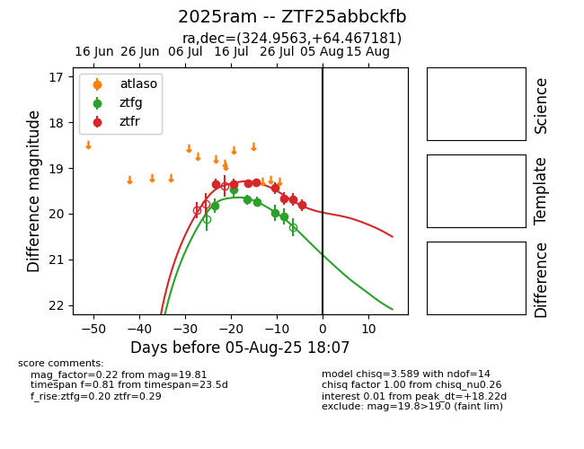

Target 2025ram at 2025-08-05 18:07, see:
FINK: fink-portal.org/2025ram
Lasair: lasair-ztf.lsst.ac.uk/objects/2025ram
ALeRCE: alerce.online/object/2025ram
TNS: wis-tns.org/object/2025ram
YSE: ziggy.ucolick.org/yse/transient_detail/2025ram
alt names
ZTF25abbckfb (ztf,fink)
2025ram (tns,yse)
coordinates:
equatorial (ra, dec) = (324.9563,+64.46718)
galactic (l, b) = (104.0448,+8.87535)
photometry
last ztfg=20.05, ztfr=19.81
6 ztfg, 8 ztfr detections
